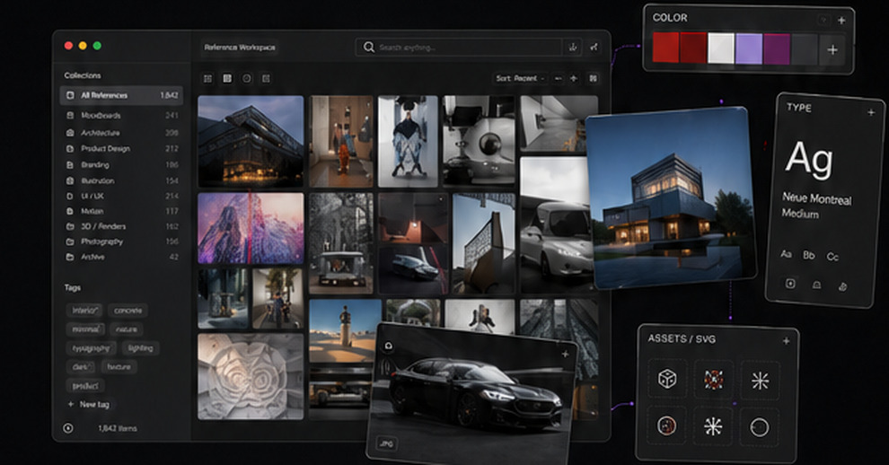
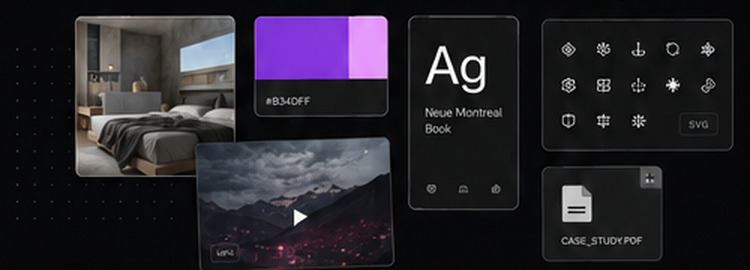
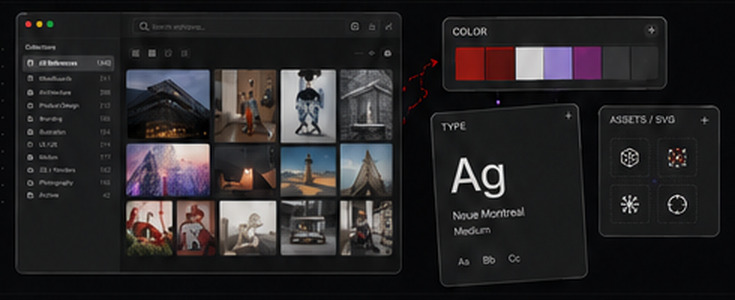
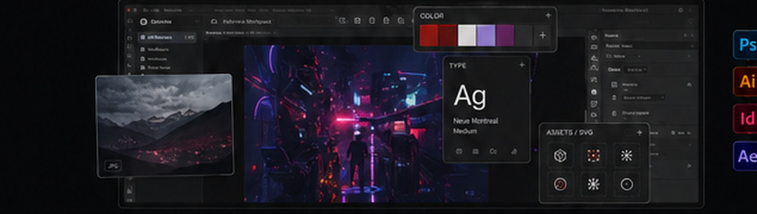
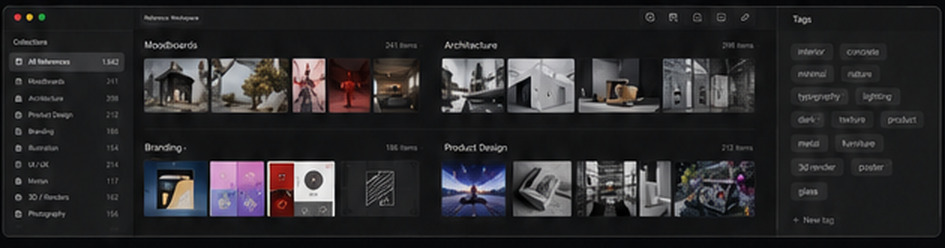

Keep references visible over other applications.
Software / Working title
Reference
Workspace
Collect, organize and keep visual references close at hand while you work.
Explore the workflow
01
Collect anything.
Images, colors, type, icons, screenshots, videos, PDFs, 3D renders and other visual material all live together.

02
Pull out what you need.
Detach useful references and utilities into floating, always-on-top panels so they remain available outside the main app.

03
Stay in sight. Stay in flow.
Keep the visual information you need above the creative apps you're already using instead of constantly switching context.

04
Organize your way.
Collections, boards, tags and search turn a growing library into something you can actually find again.

05 / Built for the way you work
Useful when it needs to be. Quiet when it doesn't.
Pull palettes and typography into small utility panels.
Keep reusable visual material one drag away.
Find the right reference without digging through folders.